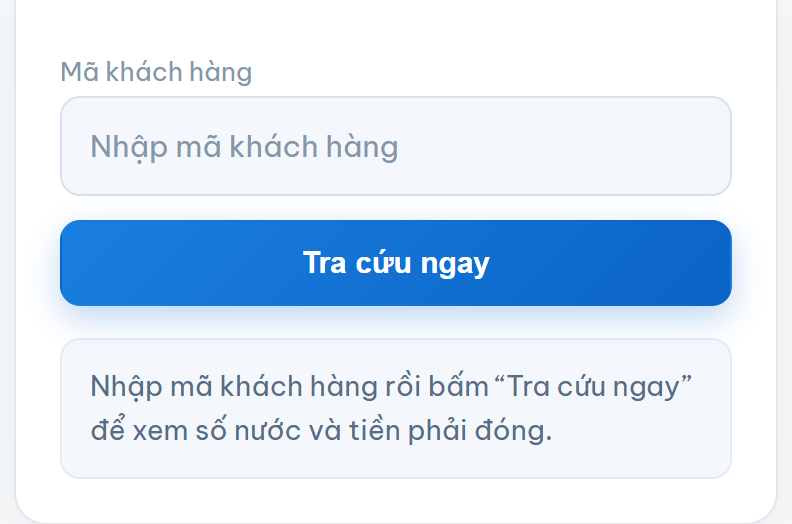
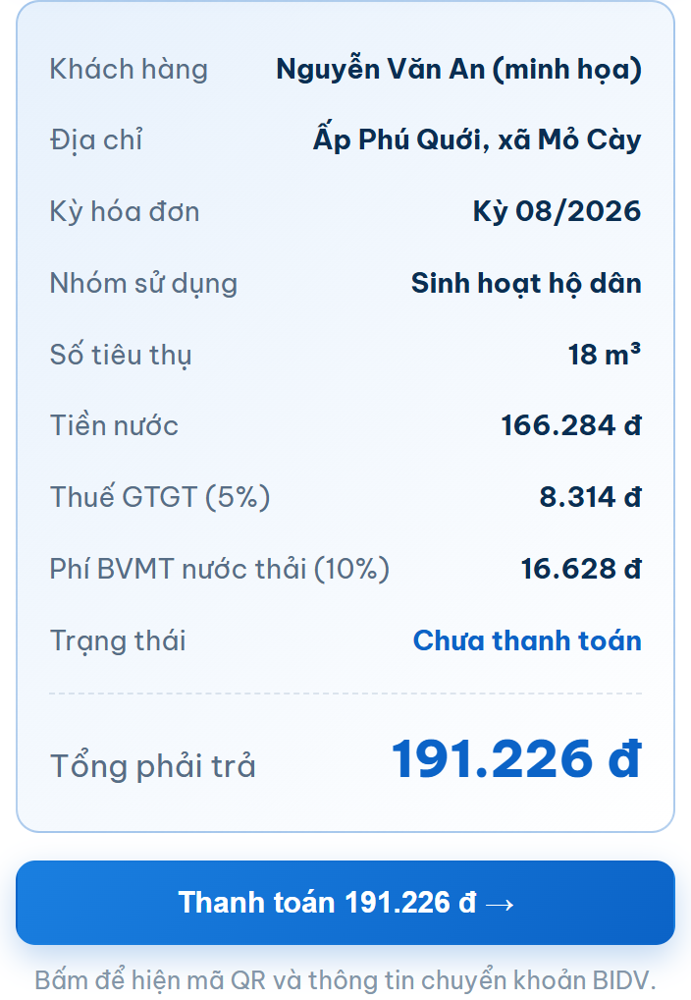
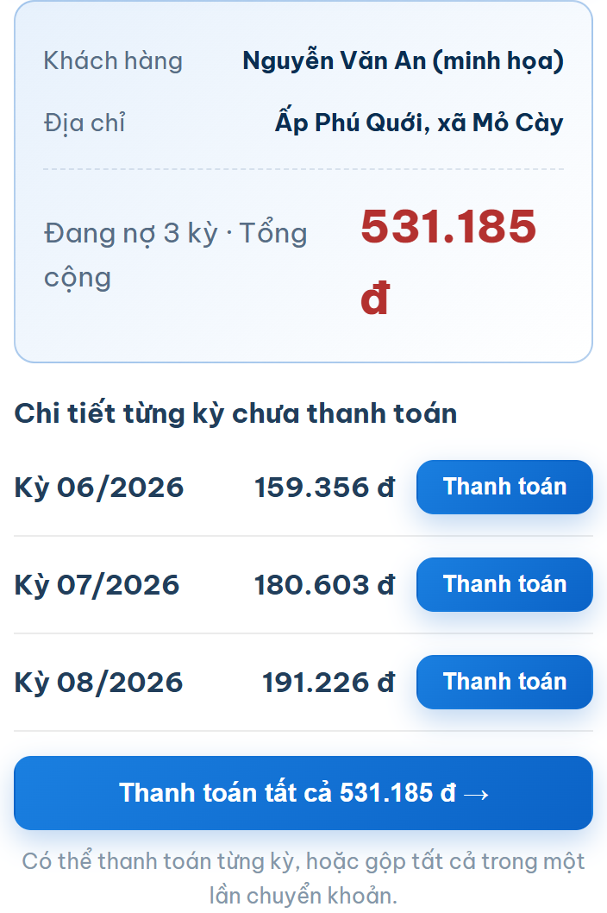

Trước đây muốn biết tiền nước tháng này bao nhiêu, bà con phải đợi nhân viên đưa hóa đơn giấy hoặc gọi lên công ty. Nay chỉ cần một mã khách hàng và khoảng mười giây.
Trang tra cứu của Công ty TNHH Cấp Thoát Nước Mỏ Cày lấy số liệu trực tiếp từ hệ thống ghi thu của công ty. Con số hiện trên màn hình chính là con số trên hóa đơn, không phải ước tính.
Địa chỉ chính thức là mocaywaco.com, website của Công ty TNHH Cấp Thoát Nước Mỏ Cày. Ô tra cứu nằm ngay đầu trang chủ, hoặc vào thẳng mục Tra cứu tiền nước trên thanh menu.
Đây là kênh duy nhất lấy dữ liệu thẳng từ hệ thống ghi thu của công ty. Các trang hướng dẫn khác trên mạng chỉ nói cách làm, không tra ra được số tiền thật của bà con.
Mã khách hàng là dãy số riêng của từng đồng hồ nước, do công ty cấp khi ký hợp đồng. Mỗi hộ một mã, không trùng nhau. Công ty dùng mã này để ghi số, lập hóa đơn và đối soát tiền.
Bà con tìm mã ở ba chỗ:
Lưu ý số 0 ở đầu. Nhiều mã khách hàng bắt đầu bằng số 0. Gõ thiếu số 0 là tra không ra. Cứ nhập đúng y như in trên hóa đơn.

Cả ba bước làm trên điện thoại được, không cần máy tính.

Sau khi bấm tra cứu, bà con thấy đầy đủ các mục sau:
| Mục | Ý nghĩa |
|---|---|
| Khách hàng | Tên chủ hộ đứng tên hợp đồng cấp nước |
| Kỳ hóa đơn | Tháng và năm của kỳ đang tra |
| Nhóm sử dụng | Sinh hoạt hộ dân, hành chính sự nghiệp, sản xuất hoặc kinh doanh |
| Số tiêu thụ | Số mét khối nước đã dùng trong kỳ |
| Tiền nước | Số mét khối nhân đơn giá theo nhóm, chưa gồm thuế |
| Thuế giá trị gia tăng | 5% tính trên tiền nước |
| Phí bảo vệ môi trường | 10% tính trên tiền nước, áp cho nước thải |
| Trạng thái | Đã thanh toán hoặc chưa thanh toán |
| Tổng phải trả | Số tiền cuối cùng cần đóng cho kỳ đó |
Muốn hiểu kỹ từng con số được tính ra sao, xem bài cách tính tiền nước sinh hoạt.

Có hộ vài tháng chưa đóng. Trường hợp này trang tra cứu không gộp thành một cục, mà liệt kê rõ từng kỳ: tháng nào, số hóa đơn bao nhiêu, dùng bao nhiêu mét khối, tiền bao nhiêu. Phía trên hiện tổng nợ và số kỳ đang nợ.
Cách trình bày này giúp bà con biết chính xác mình thiếu những tháng nào, tránh cảnh nghe báo một con số lớn mà không rõ vì đâu.
Mỗi kỳ có nút thanh toán riêng. Bà con trả dần từng kỳ, hoặc bấm Thanh toán tất cả để trả gọn một lần.
Ngay dưới kết quả có nút Thanh toán. Bấm vào là hiện mã QR chuyển khoản ngân hàng, kèm số tài khoản và nội dung chuyển tiền.
Mã QR đã điền sẵn đúng số tiền và đúng nội dung. Bà con mở ứng dụng ngân hàng, quét mã, kiểm tra lại rồi xác nhận. Không phải gõ tay số tài khoản nên không sợ nhầm.
Giữ nguyên nội dung chuyển khoản. Nội dung gồm mã khách hàng và kỳ thanh toán. Sửa nội dung này thì công ty khó đối soát, tiền đã trả có thể chưa được ghi nhận ngay.
Chi tiết các bước quét mã xem tại bài thanh toán tiền nước bằng mã QR.
Có bốn nguyên nhân thường gặp:
Thử lại vẫn không được thì gọi tổng đài (0275) 3662 893 trong giờ làm việc, từ thứ 2 tới thứ 7, sáng 7h tới 11h, chiều 13h tới 17h.
Nhiều bà con quen tra tiền nước trên ứng dụng ví điện tử. Hai cách khác nhau ở chỗ này:
| Tiêu chí | Web công ty | Ví điện tử |
|---|---|---|
| Nguồn số liệu | Trực tiếp từ hệ thống ghi thu | Qua trung gian kết nối |
| Xem công nợ nhiều kỳ | Có, liệt kê từng kỳ | Thường chỉ hiện kỳ gần nhất |
| Cần cài ứng dụng | Không | Có |
| Cần đăng ký tài khoản | Không | Có |
| Phí dịch vụ | Không | Tùy ví, có ví thu phí |
Bà con dùng cách nào cũng được. Muốn xem đầy đủ công nợ từng tháng và đối chiếu với hóa đơn giấy thì tra trên web công ty là rõ nhất.
Không. Tra cứu trên website chính thức của công ty hoàn toàn miễn phí, không cần đăng ký tài khoản.
In ở phần đầu hóa đơn, thường nằm cạnh tên chủ hộ. Mã này cũng có trên hợp đồng cấp nước đã ký với công ty.
Đúng. Số liệu lấy trực tiếp từ hệ thống ghi thu, trùng với hóa đơn giấy. Đã gồm tiền nước, thuế giá trị gia tăng 5% và phí bảo vệ môi trường nước thải 10%.
Có. Trang tra cứu liệt kê từng kỳ còn nợ kèm số hóa đơn, số nước và số tiền, cùng tổng nợ. Khách hàng chọn trả từng kỳ hoặc gộp tất cả.
Được, chỉ cần biết mã khách hàng của hộ đó. Tra cứu không yêu cầu đăng nhập.
Giao dịch được ghi nhận trong giờ làm việc. Nếu qua một ngày làm việc mà trạng thái chưa đổi, gọi tổng đài (0275) 3662 893 kèm ảnh chụp giao dịch để công ty đối soát.